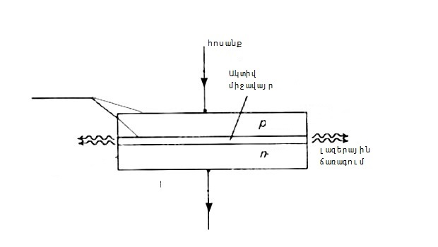

Ինչպես միացնել լազերային մոդուլը Ardunio-ին
Ardunio-ում լազերային մոդուլի կիրառմամբ տարբեր հետաքրքիր նախագծեր հնարավոր է իրականացնել, Դիտարկենք, թե ինչպես միացնել լազերային մոդուլը Ardunio-ին, անվտանգության ինչ կանոներ պետք է պահպանելKY-008` լազերային մոդուլին
Մոդուլի հիմնական բաղադրատարրը տարբեր լազերային լեդն է պղնձե գլանաձև սառեցման ռադիատորով(մատորների միջև սարեցնելու հարմարանք): Բացի դա պլատայի վրա տեղադրված են նաև պասիվ բաղադրատարեր, որոնք ապահովում են լեդի կայուն աշխարանքային ռեժիմը:
լազերային մոդուլը միացնելով Ardunio-ին, p-ով անցնում են էլեկտրոնները և տեղի է ունենում լույսի ֆոտոնների ռեկոմբինացում(ֆոտոնների ճառագում միատեսակ պարամետրերով):Լազերի աշխատանքի սկզբունքը հիմնված է այն հանգամանքի վրա, որ լույսի ճառագայթվող ֆոտոնները առաջացնում են կրկնակի ճառագայթում, որն աճում է ձնահյուսի պես:KY-008 մոդելի ճառագումը կախված է հոսանքի հզորությունից:Թույլ հոսանքի դեպքում այն աշխատում է որպես սովորական լեդ, քանի որ տեղի է ունենում միայն ինքնաբերական ֆոտոնների ճառագայթում:Երբ հոսանքի հզորությունը մեծանում է, կտրուկ մեծանում է ճառագայթման հզորությունը,
Լազերային մոդուլի միացումը Ardunio-ին
- Ardunio Uno/ Ardunio Nano/Ardunio Mega
- KY-008 մոդուլ
- լարեր՝<<պապա-մամա>>
#define LASER 10
void setup() {
pinMode(LASER, OUTPUT);
}
void loop() {
for ( int i=0; i<=5; i++)
{
digitalWrite(LASER, HIGH);
delay(500);
digitalWrite(LASER, LOW);
delay(500);
}
delay(3000);
}
#define LASER 10
void setup() {
pinMode(LASER, OUTPUT);
}
void loop() {
for ( int i=0; i<=255; i++)
{
analogWrite(LASER, i);
delay(5);
}
for (int i=255; i>=0; i--)
{
analogWrite(LASER, i);
delay(5);
}
}